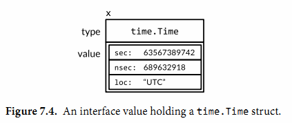
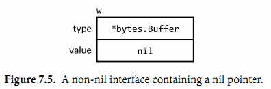

7.5. 接口值
概念上講一個接口的值，接口值，由兩個部分組成，一個具體的類型和那個類型的值。它們被稱爲接口的動態類型和動態值。對於像Go語言這種靜態類型的語言，類型是編譯期的概念；因此一個類型不是一個值。在我們的概念模型中，一些提供每個類型信息的值被稱爲類型描述符，比如類型的名稱和方法。在一個接口值中，類型部分代表與之相關類型的描述符。
下面4個語句中，變量w得到了3個不同的值。（開始和最後的值是相同的）
var w io.Writer
w = os.Stdout
w = new(bytes.Buffer)
w = nil
讓我們進一步觀察在每一個語句後的w變量的值和動態行爲。第一個語句定義了變量w:
var w io.Writer
在Go語言中，變量總是被一個定義明確的值初始化，卽使接口類型也不例外。對於一個接口的零值就是它的類型和值的部分都是nil（圖7.1）。

一個接口值基於它的動態類型被描述爲空或非空，所以這是一個空的接口值。你可以通過使用w==nil或者w!=nil來判讀接口值是否爲空。調用一個空接口值上的任意方法都會産生panic:
w.Write([]byte("hello")) // panic: nil pointer dereference
第二個語句將一個*os.File類型的值賦給變量w:
w = os.Stdout
這個賦值過程調用了一個具體類型到接口類型的隱式轉換，這和顯式的使用io.Writer(os.Stdout)是等價的。這類轉換不管是顯式的還是隱式的，都會刻畵出操作到的類型和值。這個接口值的動態類型被設爲*os.Stdout指針的類型描述符，它的動態值持有os.Stdout的拷貝；這是一個代表處理標準輸出的os.File類型變量的指針（圖7.2）。

調用一個包含*os.File類型指針的接口值的Write方法，使得(*os.File).Write方法被調用。這個調用輸出“hello”。
w.Write([]byte("hello")) // "hello"
通常在編譯期，我們不知道接口值的動態類型是什麽，所以一個接口上的調用必鬚使用動態分配。因爲不是直接進行調用，所以編譯器必鬚把代碼生成在類型描述符的方法Write上，然後間接調用那個地址。這個調用的接收者是一個接口動態值的拷貝，os.Stdout。效果和下面這個直接調用一樣：
os.Stdout.Write([]byte("hello")) // "hello"
第三個語句給接口值賦了一個*bytes.Buffer類型的值
w = new(bytes.Buffer)
現在動態類型是*bytes.Buffer併且動態值是一個指向新分配的緩衝區的指針（圖7.3）。

Write方法的調用也使用了和之前一樣的機製：
w.Write([]byte("hello")) // writes "hello" to the bytes.Buffers
這次類型描述符是*bytes.Buffer，所以調用了(*bytes.Buffer).Write方法，併且接收者是該緩衝區的地址。這個調用把字符串“hello”添加到緩衝區中。
最後，第四個語句將nil賦給了接口值：
w = nil
這個重置將它所有的部分都設爲nil值，把變量w恢複到和它之前定義時相同的狀態圖，在圖7.1中可以看到。
一個接口值可以持有任意大的動態值。例如，表示時間實例的time.Time類型，這個類型有幾個對外不公開的字段。我們從它上面創建一個接口值,
var x interface{} = time.Now()
結果可能和圖7.4相似。從概念上講，不論接口值多大，動態值總是可以容下它。（這隻是一個概念上的模型；具體的實現可能會非常不同）

接口值可以使用＝＝和！＝來進行比較。兩個接口值相等僅當它們都是nil值或者它們的動態類型相同併且動態值也根據這個動態類型的＝＝操作相等。因爲接口值是可比較的，所以它們可以用在map的鍵或者作爲switch語句的操作數。
然而，如果兩個接口值的動態類型相同，但是這個動態類型是不可比較的（比如切片），將它們進行比較就會失敗併且panic:
var x interface{} = []int{1, 2, 3}
fmt.Println(x == x) // panic: comparing uncomparable type []int
考慮到這點，接口類型是非常與衆不同的。其它類型要麽是安全的可比較類型（如基本類型和指針）要麽是完全不可比較的類型（如切片，映射類型，和函數），但是在比較接口值或者包含了接口值的聚合類型時，我們必鬚要意識到潛在的panic。同樣的風險也存在於使用接口作爲map的鍵或者switch的操作數。隻能比較你非常確定它們的動態值是可比較類型的接口值。
當我們處理錯誤或者調試的過程中，得知接口值的動態類型是非常有幫助的。所以我們使用fmt包的%T動作:
var w io.Writer
fmt.Printf("%T\n", w) // "<nil>"
w = os.Stdout
fmt.Printf("%T\n", w) // "*os.File"
w = new(bytes.Buffer)
fmt.Printf("%T\n", w) // "*bytes.Buffer"
在fmt包內部，使用反射來獲取接口動態類型的名稱。我們會在第12章中學到反射相關的知識。
7.5.1. 警告：一個包含nil指針的接口不是nil接口
一個不包含任何值的nil接口值和一個剛好包含nil指針的接口值是不同的。這個細微區别産生了一個容易絆倒每個Go程序員的陷阱。
思考下面的程序。當debug變量設置爲true時，main函數會將f函數的輸出收集到一個bytes.Buffer類型中。
const debug = true
func main() {
var buf *bytes.Buffer
if debug {
buf = new(bytes.Buffer) // enable collection of output
}
f(buf) // NOTE: subtly incorrect!
if debug {
// ...use buf...
}
}
// If out is non-nil, output will be written to it.
func f(out io.Writer) {
// ...do something...
if out != nil {
out.Write([]byte("done!\n"))
}
}
我們可能會預計當把變量debug設置爲false時可以禁止對輸出的收集，但是實際上在out.Write方法調用時程序發生了panic：
if out != nil {
out.Write([]byte("done!\n")) // panic: nil pointer dereference
}
當main函數調用函數f時，它給f函數的out參數賦了一個*bytes.Buffer的空指針，所以out的動態值是nil。然而，它的動態類型是*bytes.Buffer，意思就是out變量是一個包含空指針值的非空接口（如圖7.5），所以防禦性檢査out!=nil的結果依然是true。

動態分配機製依然決定(*bytes.Buffer).Write的方法會被調用，但是這次的接收者的值是nil。對於一些如*os.File的類型，nil是一個有效的接收者(§6.2.1)，但是*bytes.Buffer類型不在這些類型中。這個方法會被調用，但是當它嚐試去獲取緩衝區時會發生panic。
問題在於盡管一個nil的*bytes.Buffer指針有實現這個接口的方法，它也不滿足這個接口具體的行爲上的要求。特别是這個調用違反了(*bytes.Buffer).Write方法的接收者非空的隱含先覺條件，所以將nil指針賦給這個接口是錯誤的。解決方案就是將main函數中的變量buf的類型改爲io.Writer，因此可以避免一開始就將一個不完全的值賦值給這個接口：
var buf io.Writer
if debug {
buf = new(bytes.Buffer) // enable collection of output
}
f(buf) // OK
現在我們已經把接口值的技巧都講完了，讓我們來看更多的一些在Go標準庫中的重要接口類型。在下面的三章中，我們會看到接口類型是怎樣用在排序，web服務，錯誤處理中的。